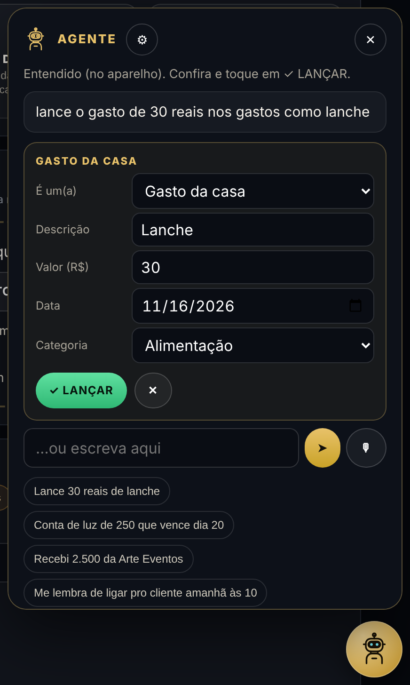

Conta de luz em PDF, foto do cupom ou o código de barras: o leitor lê e lança onde você escolher. E o robô do canto da tela lança o que você falar.

Toque no robô (canto da tela) — ele já escuta. Fale do seu jeito: "conta de luz de 250 que vence dia 20", "recebi 2.500 da Arte Eventos", "me lembra de ligar pro cliente amanhã às 10", "o que eu tenho amanhã?", "quanto gastei este mês?". Ele mostra o que entendeu e pergunta "Confirma?": diga "sim" (ou toque ✓ LANÇAR) e vai para a agenda/contas na hora. Em ⚙ dá para ligar "lançar sem perguntar".
A leitura é feita no aparelho; a imagem não sai dele (só o comprovante de evento vai para o arquivo privado do evento). A IA Brightway, se ligada, recebe só o texto lido com CPF, CNPJ, CEP, telefone e e-mail tapados, ou só a frase falada. Perguntas como "quanto gastei" são calculadas no aparelho.